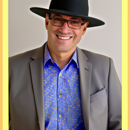

Part 0. Setup
I began the project by setting up the development environment, installing necessary libraries like PyTorch, configuring the UNet architecture, and preparing the training dataset. I established key diffusion model parameters, including the number of inference steps and noise scales, and set a fixed seed to ensure reproducibility. Below are three examples of test-generated images based on specific prompts:

an oil painting of a snowy mountain village

a man wearing a hat
a rocket ship
1.1 Forward Process
I implemented the forward process to add Gaussian noise to an image based on the cumulative product of noise scales.
The function apply_noise computes the noisy image for various timesteps, showing how noise progressively degrades the original image.

Timestep 250 - Initial noise

Timestep 500 - Moderate noise

Timestep 750 - Heavy noise
1.2 Classical Denoising
Gaussian blur was used as a baseline to compare the effectiveness of classical denoising with model-based approaches. The kernel size and sigma were carefully tuned to remove high-frequency noise while retaining image details.

Gaussian Blur - Timestep 250

Gaussian Blur - Timestep 500

Gaussian Blur - Timestep 750
1.3 One-Step Denoising
Using a trained UNet, I implemented one-step denoising by estimating and removing the noise from a noisy image.
The function predict_noise accurately predicts the added noise at a given timestep.

Result of one-step denoising - step 250

Step 500

Step 750
1.4 Iterative Denoising
This step refines the process by repeatedly estimating and removing noise over multiple timesteps. Each iteration uses the UNet's predictions to guide the denoising process.

Initial noisy image (timestep 690)

Intermediate step 10

Intermediate step 30

Fully denoised image
1.5 Diffusion Model Sampling
I initialized random noise and iteratively denoised it using the trained UNet to generate synthetic images from scratch. This method demonstrates the ability to model realistic images purely from noise.

Step 0 - Random noise

Step 10 - Intermediate

Step 20 - Improved details

Step 30 - Final output
1.6 Classifier-Free Guidance (CFG)
CFG modifies the sampling process by incorporating conditional and unconditional noise estimates, blending them to achieve guided image generation. Adjusting the guidance scale impacts the balance between realism and adherence to prompts.

CFG Sample 1

CFG Sample 2

CFG Sample 3
1.7 Image-to-Image Translation
1.7.1 Editing Hand-Drawn and Web Images
I tried doing image-to-image translation by introducing varying levels of Gaussian noise to input images. By adding different amounts of noise, I aimed to transform both hand-drawn sketches and web-sourced images into enhanced, higher-quality outputs. Utilizing iterative denoising techniques guided by the diffusion model, I was able to progressively refine these images, resulting in more polished and detailed results.
Hand-Drawn Image

Noise level 3

Noise level 5

Noise level 7

Noise level 10

Noise level 20
Web Image

Noise level 1

Noise level 5

Noise level 10

Noise level 20
1.7.2 Inpainting
I explored the inpainting technique, which involves reconstructing specific parts of an image while keeping the rest unchanged. By applying masks to designate "unknown" regions, I iteratively used the reverse diffusion process to accurately fill in the masked areas. This approach ensured that the unmasked parts of the image remained intact and consistent throughout the inpainting process.

Original Image

Applied Mask

Intermediate Result

Final Output
1.7.3 Text-Conditional Image Translation
I implemented text-conditional image translation by utilizing text prompts to guide the diffusion model in transforming noisy images into outputs that align with the desired descriptions. By conditioning the model on specific textual inputs, I was able to direct the denoising process to produce images that not only reduced noise but also matched the semantic content specified by the prompts.
Example 1

Noise level 1

Noise level 5

Noise level 10

Noise level 20
1.8 Visual Anagrams
I created visual anagrams by flipping images and averaging the noise estimates for both orientations. This innovative technique resulted in images that could be interpreted in two different ways depending on the viewing angle. By combining the noise patterns from the original and flipped versions, I was able to generate visually ambiguous images that offer dual interpretations, showcasing the creative potential of diffusion models.

Old Man

Campfire
1.10 Hybrid Images
I experimented with creating hybrid images by blending high-frequency and low-frequency information from different sources. This approach resulted in visuals that appear ambiguous, changing their perception based on the viewer's distance. By applying lowpass filters to one image and highpass filters to another, I merged distinct visual elements into a single, cohesive image. This technique highlights the diffusion model's ability to manipulate and combine different frequency components to produce complex, detailed visuals.

Skull x Waterfall

Dog x Old Man

Man Wearing Hat x Pencil (Failure)